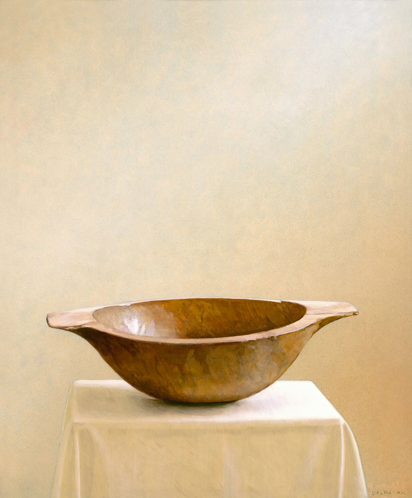

The first season opens in 2027
A studio of sacred and spiritual painting in Assisi, Italy. The focus of the school is finding the sacred and spiritual in art through the study of God's creation. For a season, allievi (students) live at the house in the foothills of Assisi, work in the bottega (workshop) alongside the maestro, and share its rest, prayer and table.
A school for drawing and painting, and a place to retreat to. In Mark's words: “It will be a restorative place for painters, writers etc. a quiet retreat with community.”
“My house was on the road St. Francis would walk to Gubbio.”Mark Balma, of his earlier home near Assisi
Now he returns to those same fields and foothills below Assisi, the land St. Francis walked, to open his school.

“Art imitates nature as well as it can, as a pupil follows his master; thus it is sort of a grandchild of God.”Dante Alighieri
creare
Drawing, egg tempera, oil and buon fresco in the bottega, working alongside the maestro.
riposo
A stone Italian villa in the fields and foothills below Assisi, with quiet and time to see.
preghiera

La Cappella: the old stable, becoming a chapel.
comunità
The allievi (students) share one table in the vaulted refectory.
[CONFIRM daily schedule: studio hours, Mass/prayer times]
Students will learn the discipline of drawing, hand-eye coordination, and the observation of light and shadow while incorporating methods of the Old Masters: pencil, charcoal, silverpoint, red/black chalk and ink.
Mark Balma instructs students in the use of egg tempera and oil painting as practiced in 15th-century Europe by the Flemish Masters and Leonardo da Vinci. Accomplished students will also learn the art of buon fresco, working directly with Mark Balma on fresco murals.

Bellezza · Bontà · Verità
Every stage of the path is ordered to beauty, goodness and truth.
“For imitation is natural to man from his infancy… he is imitative, and acquires his rudiments of knowledge in this way.”Aristotle, Poetics
disegno
Pencil, charcoal, silverpoint, red and black chalk, and ink.
tempera
Egg tempera, as practiced in 15th-century Europe.
olio
Oil in the 15th-century manner of the Flemish masters and Leonardo da Vinci.
affresco
Accomplished students work directly with Mark Balma on fresco murals.
The old stable is becoming the chapel. In Mark's words: “The old stable will become a chapel, I am using all the old wooden mangers as materials for benches etc. it will also have a few frescoes!”
Mass and prayer schedule: [CONFIRM]
The allievi come to Assisi as pilgrims, not tourists. Beyond the bottega, the land itself invites pilgrimage: to the Basilica of St. Francis and the frescoes of Cimabue and Giotto, to Norcia, Cascia, Foligno and Perugia, and to Terni, where Mark is painting Women of Faith for the Church of the Immaculate Conception.
Imitatio continues this tradition in the same hills.
Pellegrinaggi · Pilgrimages: which places, how often, how pilgrims travel, and any cost [CONFIRM]. Fridays set aside for pilgrimage? [CONFIRM]
Spring and Autumn 2027
6 weeks
The full season, and the flagship. Time to carry a buon fresco from drawing to cartoon to wet plaster, and to live the full rhythm of creating, rest, prayer and community.
3 weeks
Joins the first or second half of a season, for those who can't step away for six.



A chef’s table, and outdoor dining.
Plenty of quiet time to pray, meditate, and rest.
[CONFIRM lodging, meals, materials, pilgrimages]
Aspiring allievi: painters who want to learn the old way, in the hand and the eye, and who are drawn to sacred art. Accomplished students may work on fresco murals with Mark. [CONFIRM experience level]
“In this chapter of my life I want to continue creating art in the church using the variety of techniques that I have practiced and hopefully passing on to others what I have learned in a studio/school I will create in Assisi, Italy. It is there I will also continue to explore the art of portraiture and the spirit in art that brings us all closer to God.”Mark Balma